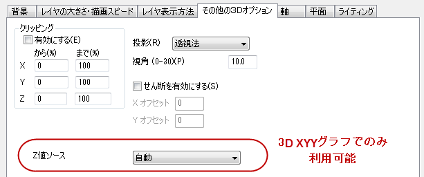
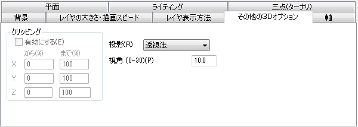

このタブは、作図の詳細ページの左側パネルで3Dグラフのレイヤレベルが選択されているときに利用できます。このタブでは、クリッピング、投影、せん断をコントロールできます。
|  |
| デカルト座標系の3DOpenGLグラフのその他の3Dオプションタブ |
|  |
| 三点座標系の3DOpenGLグラフのその他の3Dオプションタブ |
このグループはX、Y、Zデータのクリッピングをコントロールします。クリッピングはのデータの表示を軸のスケール値で設定した範囲内に制限します。このグループは3D三点グラフではグレーアウトします。
| 有効にする |
このチェックボックスにチェックすると、XYZクリッピングが有効になります。このチェックボックスにチェックを付けると、軸スケールの開始値と終了値の間にあるXYZデータのみがグラフに表示されます。 |
|---|---|
| パーセントによる |
X、Y、Z次元のデータ表示範囲を指定します。デフォルトは、0-100で、軸の開始と終了値の範囲（その次元内の最大値と最小値によって決定されます）にあるデータの100%が表示されるという意味です。開始パーセンテージが0未満または100を超える場合、軸の開始および終了値の外側のポイントがグラフに表示されることもあります。 |
| 値による |
X、Y、Z次元のデータ表示範囲を指定します。デフォルトは、軸の開始と終了の値です（その次元内の最大値と最小値によって決定されます）。開始と終了の値がX、Y、Zの最小値または最大値よりも小さいか大きい場合、軸の開始および終了値の外側のポイントがグラフに表示される場合があります。 |
このドロップダウンリストは、3Dグラフの投影法を設定するのに使用します。
3Dグラフを回転するだけでなく、視角も変更することができます。この編集ボックスは、投影ドロップダウンリストで透視法を選択した時のみ利用可能です。
視角を変更すると、観測点からの実効距離を変更します。 視角テキストボックスに希望する角度を度単位で入力します。 値は、0から30度までに制限されています。また、3D回転ツールバーを使って、視角を変更することもできます。
このグループは3D三点グラフでは使用できません。
せん断を有効にするにチェックを付けると、XオフセットとY/Zオフセットから3DグラフをX/YあるいはX/Z方向にせん断します。(3DXYYグラフではXとYにオフセットを設定できます。3DXYZ/行列グラフではXとZにオフセットを設定できます。)オフセット値はX/YまたはX/Z方向にせん断する距離のパーセントになります。例えば、X 軸オフセット＝-100は、X軸を水平に右へ移動し、距離はX軸の100%の長さです。
チェックボックスにチェックを付けるとゆがみボタンが追加され、グラフをクリックするとOpenGL 3Dツールバーがで使用できます。このツールを使用するとダイアログ内のオフセット値を更新します。
これは、3D三点曲面グラフには適用されません。
このオプションは3DXYYグラフでのみ使用でき、2Dウォータフォールグラフのウォータフォールタブと同じものになりますのように値を制御します。